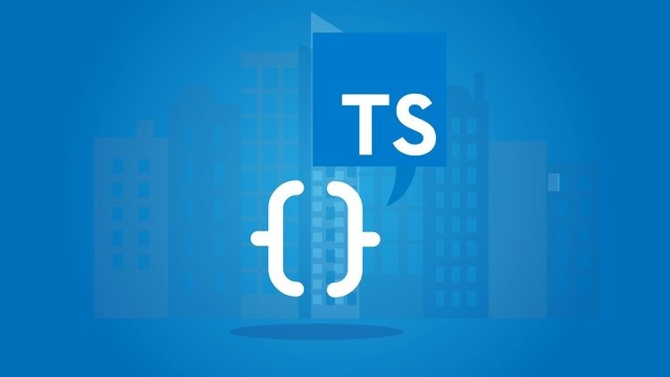

JavaScript es uno de los lenguajes más populares, en parte porque ha evolucionado y mejorado a pasos agigantados en los últimos años. Sin embargo, Javascript en algún punto fue un lenguaje que presentaba muchos problemas para bases de código grandes, aplicaciones de gran escala y proyectos con muchos años de desarrollo.
Typescript es un superset de JavaScript. Decimos que una tecnología es un superset de un lenguaje de programación, cuando puede ejecutar programas de la tecnología, Typescript en este caso, y del lenguaje del que es el superset, JavaScript en este mismo ejemplo. En resumen, esto significa que los programas de JavaScript son programas válidos de TypeScript, a pesar de que TypeScript sea otro lenguaje de programación.
